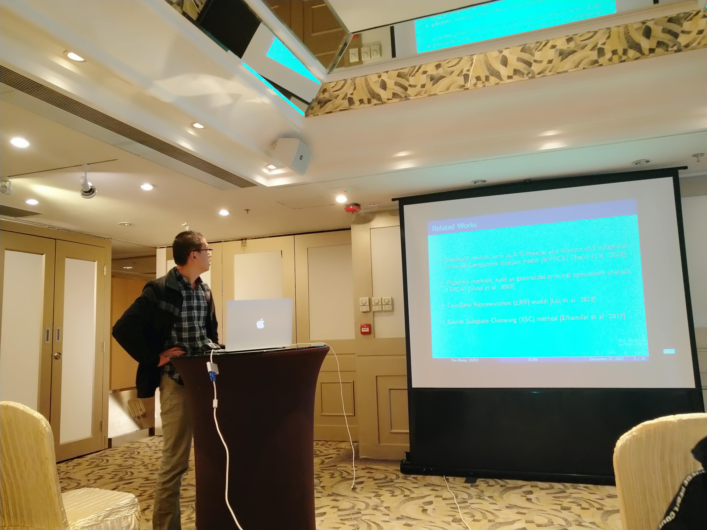

|
 |
Dr. Yao Zhang
Email: zhangyao2@nbu.edu.cn
Please feel free to stop by at my office 919, EECS.
My office timing is from 08:30 to 17:00 for a workweek.
Science is about understanding the world, while engineering is about changing it.
|
Biography
Yao was born in a rural village near Weishan Lake in northwestern Jiangsu, China, where he spent his childhood and teenage years. He completed his primary and secondary education there before moving to Shenzhen.
After graduating from high school, Yao moved to Shenzhen, where he pursued a B.S. and an M.S. in Mathematics at Shenzhen University, earning his bachelor's degree in June 2014 and his master's degree in June 2019.
Following his university studies, Yao worked at a semiconductor company near Lihu Lake in Wuxi from July 2014 to June 2016. During this time, he also ran a street stall as a side business.
Yao later pursued a Ph.D. in Astronomy at the University of Chinese Academy of Sciences, completing his doctoral studies in September 2024. Before starting his Ph.D., he gained valuable research experience as an assistant at the Chinese Academy of Sciences. In the fall of 2022, Yao married a doctor, marking a significant milestone in his personal life.
Currently, Yao is a Postdoctoral Researcher at Ningbo University, where he continues his academic and scientific endeavors.
Research Interests
Mathematical Problems in Data Science
Data Science Applications in Brain Disorders
Data Science Applications in Theoretical Physics
|